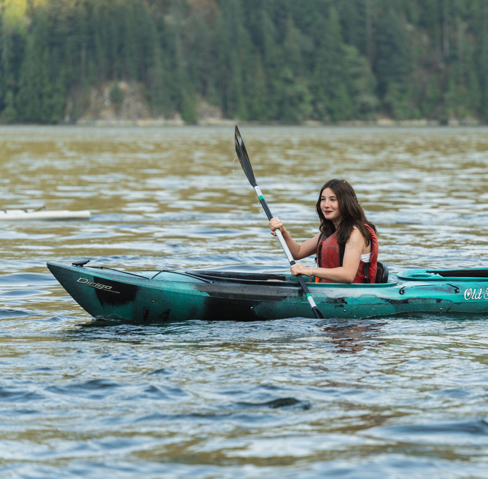
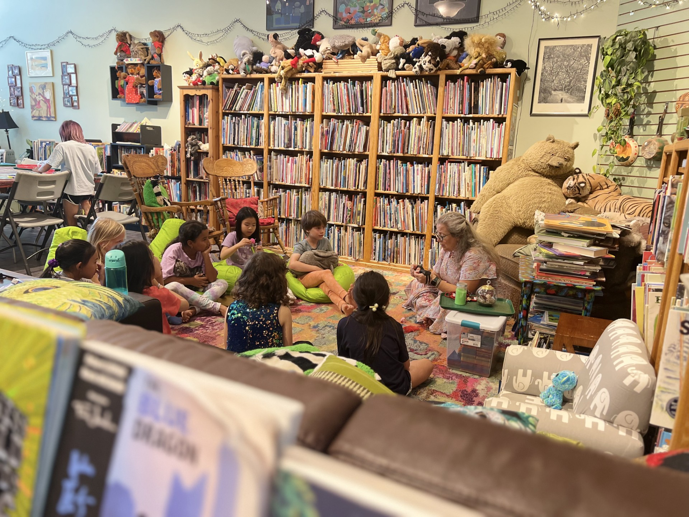
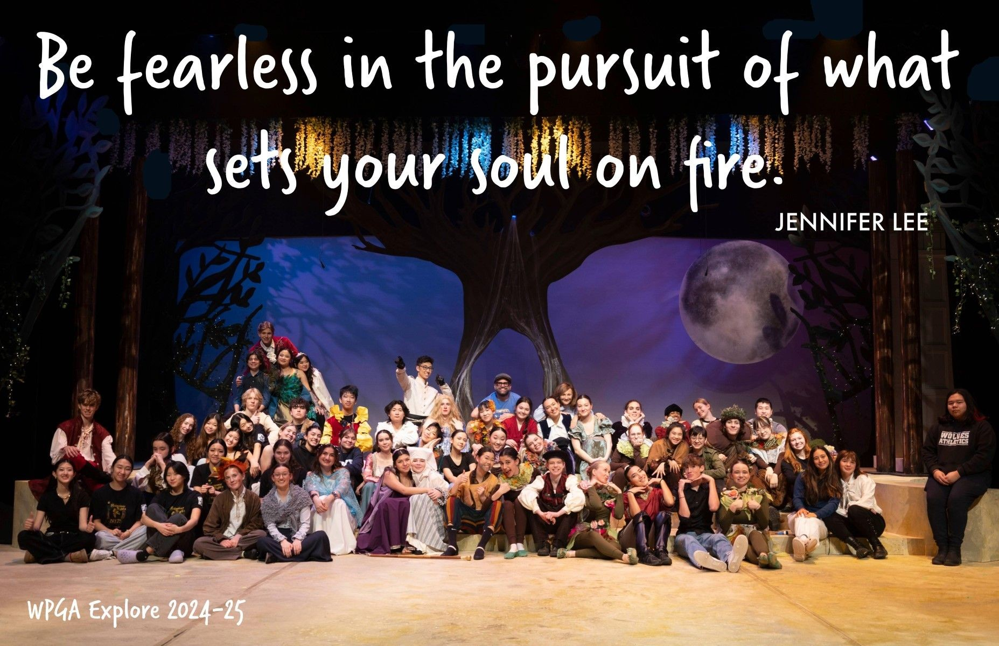
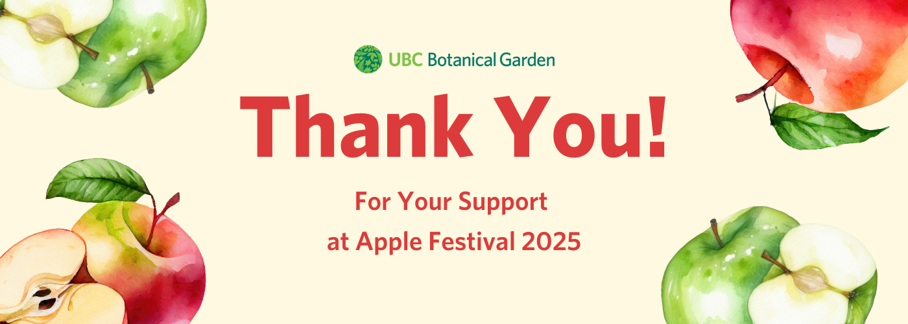
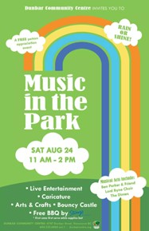

Lola Estelle Lavin
Giving back through hands-on service — from summer camps to botanical gardens, theatre ushering to environmental cleanups.

Work weekends for 2+ years. Served as LIT (Leader in Training) in 2024, then CIT (Counsellor in Training) with full Practicum in 2025 — mentoring younger campers and leading activities in an outdoor residential camp setting.

Provided childcare and assisted with event setup at this beloved Vancouver literary and arts space, helping create enriching experiences for young readers and their families.

In Grade 9, volunteered with the theatre company during WPGA's production of A Midsummer Night's Dream, welcoming guests at the door, checking people in, and ensuring a warm experience for all audience members attending the show.

Volunteered at the UBC Botanical Garden's Apple Festival for 2 consecutive years (2024 & 2025) — one of Vancouver's most beloved annual events. Worked in the apple tasting tent, slicing and serving heritage apple varieties to approximately 2,000 guests per day.

Volunteered at this free children's community event on August 24, 2025 (11am–2pm), featuring live entertainment, arts & crafts, and family activities at the Dunbar Community Centre.
Animal care and community support for the BC SPCA.
Active member contributing to community service initiatives through Guiding.
Environmental stewardship through shoreline restoration and cleanup efforts.
Youth environmental advocacy and conservation awareness initiatives.